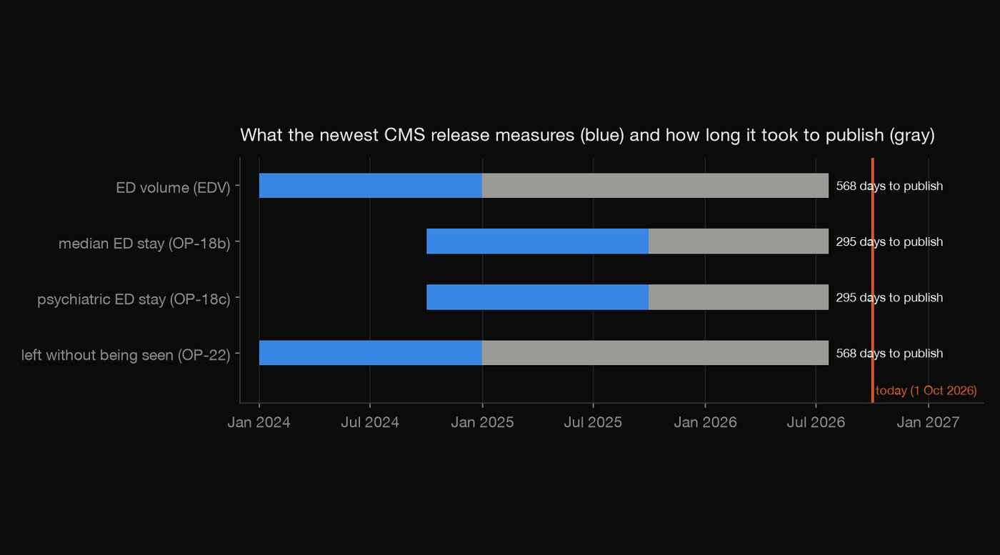
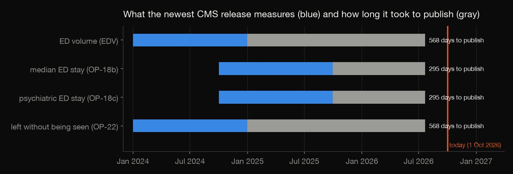
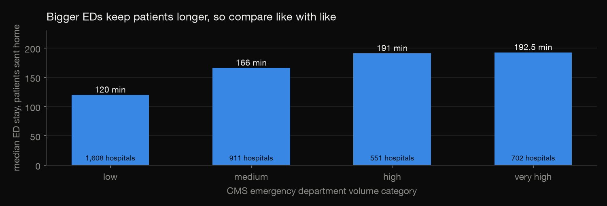
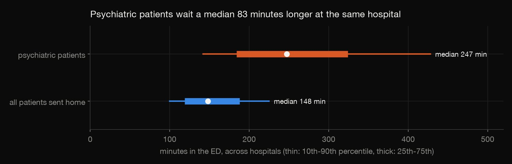
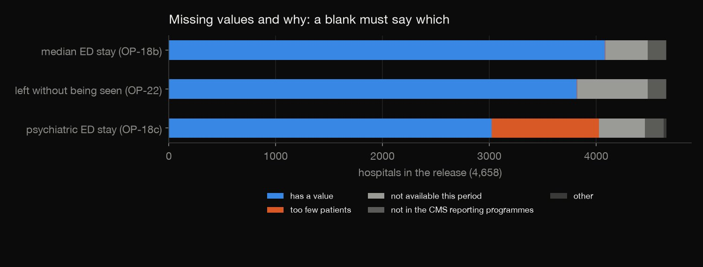
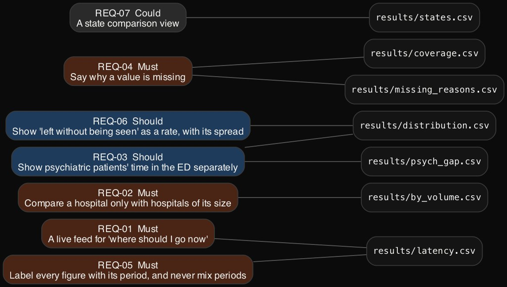

Requirements analysis · Data fitness · 2026-10
ER Wait Dashboard Requirements
Requirements for a state "ER wait times" dashboard, measured against what CMS's emergency department data can and cannot support: 12-month-old figures, waits that depend on hospital size, psychiatric patients who wait far longer, and blanks that need explaining.

An independent portfolio project: no state commissioned it and no stakeholders were interviewed. The personas are illustrative, and every target is a proposal.
01 — The problem
A state health department wants a public dashboard of emergency department waits, and CMS already publishes ED measures for every hospital. Three people would use it: a parent deciding tonight which ER to go to, an ED medical director comparing their department, and a state analyst watching access and mental-health care.
What can the CMS data actually support for each of them, and what must the dashboard require that the data can't give?
02 — What I built
A data-fitness analysis of the July 2026 CMS release for 4,658 hospitals, turned into requirements:
- Evidence queries: coverage and the reasons values are missing, the release lag, waits by ED volume, the psychiatric gap, the spread of left-without-being-seen rates, state differences.
- Seven requirements and two rejected candidates in one YAML file, each citing its evidence.
- Generated outputs: a requirements document and a traceability matrix, from a checker that refuses uncited numbers.
- An independent recomputation in plain Python.
03 — How it was built
- 01
Measure how old the data is
The release's ED stay measures cover October 2024 to September 2025 and were published 295 days after that period ended; left-without-being-seen and volume cover 2024 and took 568 days. On 1 October 2026 the newest wait figure is 12 months old. That settles the parent's need: no CMS measure can say where to go tonight, so the dashboard has to require a live feed from hospitals (REQ-01).

DATE '{RELEASED}' AS released, date_diff('day', max(period_end), DATE '{RELEASED}') AS days_from_period_end_to_release, - 02
Check what a fair comparison needs
Median stays rise with department size: 120 minutes in low-volume EDs, 166 in medium, 191 in high and 192.5 in very high. A national league table would mostly rank size. So the requirement is to compare a hospital only within its volume category (REQ-02), and the league table is rejected.

- 03
Look for who an average hides
Psychiatric and mental-health patients spend a median 247 minutes in the ED against 148 for all patients. Matched hospital by hospital, the gap is a median 83 minutes, and in 22.3% of hospitals they wait at least twice as long. The dashboard has to show that measure separately (REQ-03).

out("psych_gap", """SELECT count(*) AS hospitals_with_both, median(p.value - g.value) AS median_extra_minutes, - 04
Explain every blank
577 hospitals have no median stay and 1,635 no psychiatric figure, for different reasons: 1,004 have too few psychiatric patients, and 172 are not in the CMS programmes that publish these measures. A blank cell reads as "no wait" or "hiding something", so each missing value must show CMS's reason (REQ-04).

- 05
Make the requirements check themselves
The requirements live in one YAML file, and each cites a results file, row, column and value. The checker, reused from the SF 311 project, refuses to build the document if a figure is uncited or wrong. Here it also caught a bug in itself: its number pattern read 192.5 as 192. Fixed, it still passes the SF 311 requirements too.

found = [float(n.replace(",", "")) for n in re.findall(r"(?<![\w.-])(\d+\.\d+|\d{1,3}(?:,\d{3})+|\d{3,})(?![\w-])", text)]
04 — Results
- REQ-01, Must: a live feed from participating EDs for "where should I go now", every figure under 15 minutes old. The CMS figure is 12 months old.
- REQ-02, Must: compare a hospital only with hospitals of its volume category.
- REQ-03, Should: show psychiatric patients' ED time beside the overall figure, with the gap.
- REQ-04, Must: say why a value is missing, from CMS's footnote.
- REQ-05, Must: label every figure with its period, and never combine periods.
- REQ-06, Should: show left-without-being-seen as a rate. The median is 1%; flag the top 10%, at 4% or more.
- REQ-07, Could: a state view. State medians run from 105 minutes (North Dakota) to 241 (Maryland).
Rejected with evidence: a national league table, which would rank size, and head-CT timeliness as a headline measure, since 68% of hospitals have no value.
05 — What I'd do next
- Validate the personas and needs with patients, ED directors and state staff.
- Design the live feed (REQ-01) with a pilot group of hospitals.
- Prototype the dashboard and test REQ-02 to REQ-04 with users.